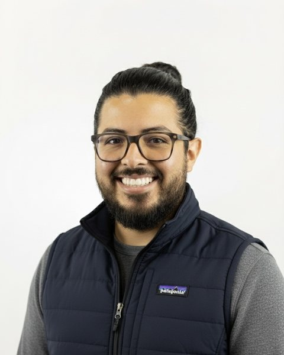

JacobZamarripa

I manage projects, people and AI, and I build the systems that connect them. I find where the work breaks down, design the tool that fixes it, direct how it gets built, and run it every day until the results show up in the numbers.
AI made me faster at work I was already doing. At Apple I went from the sales floor to leading a distributed support team. In fiber I went from installer to installation lead to project manager over forty concurrent builds. In every role, people did the work. My job was to give them tools built to outlast me: processes a team can run on its own, whether I’m online or not, and in one case, still in use after I left.
Open to product operations, technical program, implementation and operations manager roles. Based in the San Antonio, Texas area. Most recent: OmniSight, the PMO platform I ran as a project manager
Contact me on LinkedInTechnician, lead, project manager
Four case studies, placed where they happened.
How each claim is sourced
- Measured
- Produced by an employer’s system or the live platform, not by me.
- Recorded
- My own artifacts, written at the time: plans, trackers, curriculum.
- Recalled
- My account, told now.
- Illustrative
- Invented demo data or a recreation, shown to explain how something works.
-
2016
Apple
Oct 2016 – Apr 2021
Apple is where I found my voice. I started part-time in sales and left leading a distributed support team. Along the way I learned I could see where a system was breaking and bring people along to fix it. I coached teammates into their own promotions, and learned that moving up meant having my replacement ready.
- Specialist
- Technical Specialist
- Technical Expert
- Genius
- Lead Genius
- Retail Team Lead
Full role history in the period review -
2020
Case 1 of 4
Apple: Period Review
Aug 2020 – Mar 2021
In 2020 I took a temporary Retail Team Lead assignment: 29 advisors working from home across seven stores and two time zones. The team beat the site benchmark on all four KPIs, four periods in a row. Measured
Read the period review -
2022
Centric Fiber
Oct 2022 – Jan 2026
In-Home Installation Technician, Oct 2022 to Dec 2024. Every install meant typing the same equipment IDs into several systems by hand, so I built a QR workflow out of spreadsheet formulas that let technicians scan them instead. It is still in use, and the technicians on it timed closeout at about 2 minutes, down from 10. Recalled
-
2025
Fiber Installation Lead
Jan 2025 to Jan 2026. I lead with data, especially where no one expects it. The official schedule didn’t show what was actually being installed, so I built the L-FIT tracker to record it, then a monthly dashboard of technician output for my manager and the VP. 2025 was also the year AI caught up with my ideas, and what used to stay a spreadsheet started becoming an application.
-
Nov 2025
The dashboard that got noticed
A former director who had followed those monthly reports offered me my first Project Manager role.
-
Dec 2025
A project tracker in front of the VP
Once leadership saw the results, they wanted more of it. I was asked to build a tracker for the Austin and San Antonio builds, demonstrated it to the VP and upper management before I left, and wrote the handoff guide for the manager who kept it.
-
Rebuilt 2026
Case 2 of 4
Nexus FiberOps Unified
Built in 2026, never deployed
After I left, I rebuilt the Centric tools as one field app to see how they would work designed together: built for the iPad, mobile-first throughout. It was never deployed, and the records inside are invented. Illustrative
Try the Nexus prototype -
Jan 2026
Omni Fiber
Jan – Aug 2026
Construction Project Manager. Roughly 40 fiber-to-the-home builds running at once across nine municipalities, delivered through four construction vendors.
-
Feb 2026
Case 3 of 4
Right-Sizing the Fleet
Jan – Feb 2026
Weeks after leaving Centric, I authored the proposal for a former teammate’s entry in the company’s continual-improvement challenge. It turned a technician’s daily loadout into a vehicle specification and was selected as the winning submission. The trucks are now in service, built to its main components.
See how it went from proposal to fleet -
2026
Case 4 of 4
OmniSight
Forty builds produced a constant stream of vendor reports that never matched the system of record. Everyone treated the mismatch as part of the job. I treated it as a problem to solve: I designed OmniSight to pull everything into one place and flag where the sources disagreed, directed its AI-assisted build, and ran it every day on my own initiative.
Walk through OmniSightIllustrative The stage chart uses invented builds. The counts and the prep time are from the real role.